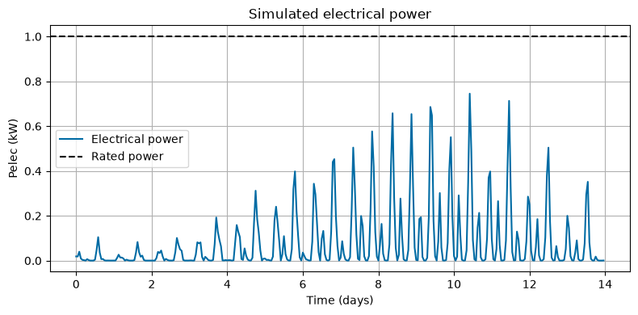

Tutorial 6: Calculating LCOE (module_lcoe)
This tutorial demonstrates how to calculate the Levelized Cost of Energy (LCOE) using LCOEData and LCOECalculator.
The LCOE calculation combines:
Tidal resource data
Turbine configuration
Vessel/platform properties
Rotor simulation results
Cost model assumptions
Project lifetime and discount rate
This tutorial briefly repeats the tidal-data, rotor-data, rotor-simulation, and vessel setup from earlier tutorials so that the LCOE workflow is self-contained.
Notes for new users
LCOE is reported in USD/kWh.
Annual energy is estimated from the simulated electrical power time series.
For
application="battery_charging",BatteryCapacity_kWhmust be provided and must be greater than zero.For
application="grid_connection", battery capacity is internally set to zero.The current active OPEX model assumes annual OPEX is 4% of CAPEX.
[1]:
import numpy as np
import matplotlib.pyplot as plt
import urllib3
from vital.module_tidal import process_tidal_data
from vital.module_rotor import RotorData
from vital.module_rotor_simulation import RotorSimulation
from vital.module_vessel import VesselData
from vital.module_constraint_checker import ConstraintChecker
from vital.module_lcoe import LCOEData, LCOECalculator
# Suppress warnings caused by NOAA requests using verify=False internally.
urllib3.disable_warnings(urllib3.exceptions.InsecureRequestWarning)
1. Load tidal and rotor data
First, load the tidal resource data and rotor performance data.
This tutorial uses the same basic NOAA workflow and Sitkana rotor file used in the previous tutorials.
[2]:
# Tidal data inputs
station = "COI0303"
startdate = "2021-09-01"
range_hrs = 2 * 7 * 24
time_step_s = 3600
city_data_file = "../data/AlaskaCityLatLong.txt"
tidal = process_tidal_data(
station=station,
startdate=startdate,
range_hrs=range_hrs,
time_step_s=time_step_s,
city_data_file=city_data_file,
)
print(f"Data source: {tidal.source}")
print(f"Station name: {tidal.station_name}")
print(f"Mooring distance: {tidal.mooring_distance:.2f} m")
print(f"Cable length: {tidal.cable_length:.2f} m")
print(f"Number of time points: {len(tidal.times)}")
# Rotor data
rotor_performance_file = "../data/Sitkana_rotor_data_blade_2.txt"
rotor = RotorData(rotor_performance_file)
print()
print(f"Optimal Cp: {rotor.CpOpt:.4f}")
print(f"Optimal TSR: {rotor.TSROpt:.4f}")
print(f"Estimated TSRmax: {rotor.TSRmax:.4f}")
Data source: NOAA
Station name: Port Mackenzie, South of
Mooring distance: 31.10 m
Cable length: 3970.22 m
Number of time points: 336
Optimal Cp: 0.2119
Optimal TSR: 0.7648
Estimated TSRmax: 1.7084
2. Plot tidal resource data
The time vector is stored in seconds. For plotting, we convert time to days.
[3]:
time_days = tidal.times / (3600 * 24)
plt.figure(figsize=(8, 4))
plt.plot(time_days, tidal.flow_speeds)
plt.xlabel("Time (days)")
plt.ylabel("Flow speed (m/s)")
plt.title(f"Tidal resource at {tidal.station_name}")
plt.grid(True)
plt.tight_layout()
plt.show()

3. Run rotor simulation
Next, define a turbine configuration and run RotorSimulation.
The simulation results provide the electrical power time series used by the LCOE calculation.
[4]:
config = {
"Radius": 0.5, # Rotor radius (m)
"Prated": 1000.0, # Rated electrical power (W)
"Trated": 100.0, # Rated generator torque (N m)
"dHub": 7.0, # Hub depth (m)
"number_of_turbines": 2, # Number of turbines
# Site/time inputs
"dMoor": tidal.mooring_distance,
"Uinf": tidal.flow_speeds,
"t": tidal.times,
# Rotor performance functions
"CpFunc": rotor.get_cp,
"CqFunc": rotor.get_cq,
"CtFunc": rotor.get_ct,
"CpOpt": rotor.CpOpt,
"TSROpt": rotor.TSROpt,
"TSRmax": rotor.TSRmax,
# Drivetrain and generator parameters
"Ng": 10,
"Kt": 1.5,
"Rw": 0.5,
"J_d": 10.0,
"B_d": 1.0,
"J_r": 50.0,
# Power-conversion model
"power_model": "simple",
}
rotor_sim = RotorSimulation(config)
rotor_sim.simulate()
result = rotor_sim.get_results()
print("Rotor simulation complete.")
print(f"Mean electrical power: {np.mean(result['Pelec']) / 1000:.3f} kW")
print(f"Maximum electrical power: {np.max(result['Pelec']) / 1000:.3f} kW")
print(f"Rated electrical power: {config['Prated'] / 1000:.3f} kW")
Solving the initial value problem (IVP) for turbine dynamics...
IVP solving complete.
Rotor simulation complete.
Mean electrical power: 0.082 kW
Maximum electrical power: 0.745 kW
Rated electrical power: 1.000 kW
4. Plot electrical power
The LCOE calculation uses the simulated electrical power time series. In this tutorial, annual energy is calculated from Pelec.
[5]:
time_days = result["t"] / (3600 * 24)
plt.figure(figsize=(8, 4))
plt.plot(time_days, result["Pelec"] / 1000, label="Electrical power")
plt.axhline(config["Prated"] / 1000, color="k", linestyle="--", label="Rated power")
plt.xlabel("Time (days)")
plt.ylabel("Pelec (kW)")
plt.title("Simulated electrical power")
plt.legend()
plt.grid(True)
plt.tight_layout()
plt.show()

5. Define vessel properties
The LCOE data object stores vessel/platform information such as drag force and vessel volume for use by cost functions when applicable.
For this tutorial, we use the same representative vessel configuration from the constraint-checking tutorial. These values are for demonstration only and should be replaced with project-specific vessel or platform properties for design studies.
[6]:
user_vessel_properties = {
"Xm": 5.77, # Horizontal distance from center of rotation (m)
"Zm": 1.65, # Vertical distance from center of rotation (m)
"Kphi": 1.95e6, # Pitch hydrostatic stiffness (N m/rad)
"theta": 45.0 * np.pi / 180.0, # Mooring line angle (rad)
"phi": 10.0 * np.pi / 180.0, # Allowable/representative pitch angle (rad)
"area": 9.5, # Cross-sectional area (m^2)
"Cd": 1.0, # Drag coefficient
}
vessel = VesselData(
user_defined=True,
vessel_properties=user_vessel_properties,
simResult=result,
)
print("Vessel object created.")
print(f"Maximum vessel drag: {np.max(vessel.Fdrag):.3f} N")
Vessel object created.
Maximum vessel drag: 43473.266 N
6. Optional: check constraints before calculating LCOE
LCOE can be calculated for any simulated design, but a design that violates constraints should generally be treated as infeasible.
Here we briefly check the same constraints introduced in the constraint-checking tutorial. The optimizer tutorial later uses constraint failures to exclude infeasible designs.
[7]:
constraint_checker = ConstraintChecker(rotor, config, vessel, result)
constraints = {
"Power Constraint": constraint_checker.check_power_constraint(),
"Depth Constraint": constraint_checker.check_depth_constraint(),
"Cavitation Constraint": constraint_checker.check_cavitation_constraint(),
"Pitch Constraint": constraint_checker.check_pitch_constraint(),
}
print("Constraint Results:")
for name, satisfied in constraints.items():
status = "Satisfied" if satisfied else "Not Satisfied"
print(f" {name}: {status}")
if not all(constraints.values()):
print()
print("Warning: One or more constraints are not satisfied. The LCOE can still be calculated, but the design should be treated as infeasible.")
Constraint Results:
Power Constraint: Satisfied
Depth Constraint: Satisfied
Cavitation Constraint: Satisfied
Pitch Constraint: Satisfied
7. Create LCOE input data
The LCOEData object stores the inputs required by LCOECalculator.
This example uses the Sitkana-style battery-charging configuration:
customer="customer_B"application="battery_charging"BatteryCapacity_kWh=10.0
Because this is a battery-charging application, battery capacity must be provided and must be greater than zero.
[8]:
lifetime = 10
discount_rate = 0.1
turbulence_intensity = 0.0
battery_capacity_kWh = 10.0
lcoe_data = LCOEData(
tidalData=tidal,
turbineConfig=config,
vesselData=vessel,
simResult=result,
lifetime=lifetime,
discount_rate=discount_rate,
turbulence_intensity=turbulence_intensity,
customer="customer_B",
application="battery_charging",
BatteryCapacity_kWh=battery_capacity_kWh,
)
calculator = LCOECalculator(lcoe_data)
print("LCOEData and LCOECalculator objects created.")
LCOEData and LCOECalculator objects created.
8. Calculate LCOE
The LCOE calculation combines CAPEX, OPEX, annual energy production, discount rate, and project lifetime.
The result is reported in USD/kWh.
[9]:
total_capex = calculator.calculate_total_capex()
total_opex = calculator.calculate_total_opex(total_capex)
annual_energy = calculator.calculate_annual_energy()
capacity_factor = calculator.calculate_capacity_factor()
lcoe = calculator.calculate_lcoe()
print(f"LCOE: ${lcoe:.4f}/kWh")
print(f"Annual energy: {annual_energy:,.2f} kWh/year")
print(f"Capacity factor: {capacity_factor:.3f}")
print(f"Total CAPEX: ${total_capex:,.2f}")
print(f"Annual OPEX: ${total_opex:,.2f}/year")
LCOE: $0.5136/kWh
Annual energy: 1,450.97 kWh/year
Capacity factor: 0.166
Total CAPEX: $3,675.82
Annual OPEX: $147.03/year
9. Inspect CAPEX and OPEX details
The calculator stores a breakdown of CAPEX components after calculate_total_capex() or calculate_lcoe() has been called.
[10]:
calculator.list_capex()
print()
calculator.list_opex(total_capex)
print()
calculator.list_annual_energy()
CAPEX Components:
anchor_cost: $159.05
gearbox_cost: $372.49
concrete_cost: $12.01
assembly_cost: $339.72
generator_cost: $703.60
rotor_cost: $3.55
steel_component_cost: $220.36
rotor_construction_cost: $6.59
battery_cost: $1500.00
charge_controller_cost: $358.45
Total component CAPEX: $3675.82
Adjustment factor: 1.00
Adjusted CAPEX: $3675.82
OPEX Components:
SITKANA Operating Cost: $147.03
Total OPEX: $147.03
Annual Energy Generation: 1450.97 kWh
Optional: Get CAPEX summary as a dictionary
For programmatic workflows, the CAPEX summary can also be returned as a dictionary.
[11]:
capex_summary = calculator.get_capex_summary()
print("CAPEX summary:")
print(f" Component CAPEX: ${capex_summary['component_capex']:,.2f}")
print(f" Adjustment factor: {capex_summary['adjustment_factor']:.2f}")
print(f" Adjusted CAPEX: ${capex_summary['adjusted_capex']:,.2f}")
print()
print("CAPEX items:")
for name, value in capex_summary["capex_items"].items():
print(f" {name}: ${value:,.2f}")
CAPEX summary:
Component CAPEX: $3,675.82
Adjustment factor: 1.00
Adjusted CAPEX: $3,675.82
CAPEX items:
anchor_cost: $159.05
gearbox_cost: $372.49
concrete_cost: $12.01
assembly_cost: $339.72
generator_cost: $703.60
rotor_cost: $3.55
steel_component_cost: $220.36
rotor_construction_cost: $6.59
battery_cost: $1,500.00
charge_controller_cost: $358.45
Summary
This tutorial showed how to:
Load tidal and rotor data.
Run a rotor simulation.
Define vessel properties.
Optionally check design constraints.
Create
LCOEData.Calculate LCOE using
LCOECalculator.Inspect annual energy, CAPEX, and OPEX.
The next tutorial demonstrates how to automate this process over a grid of design variables using the LCOE optimizer.